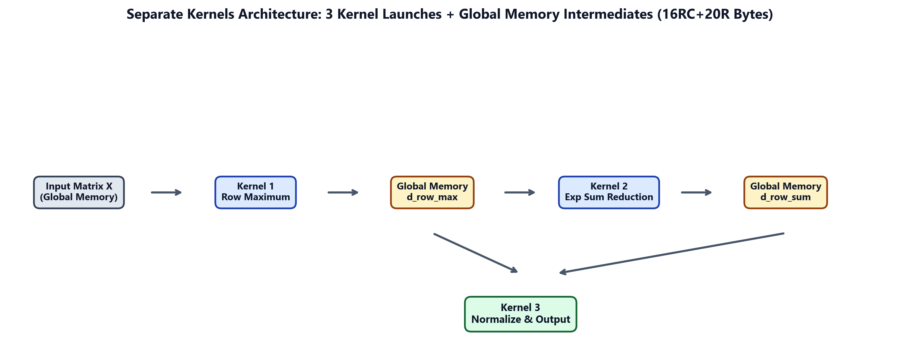
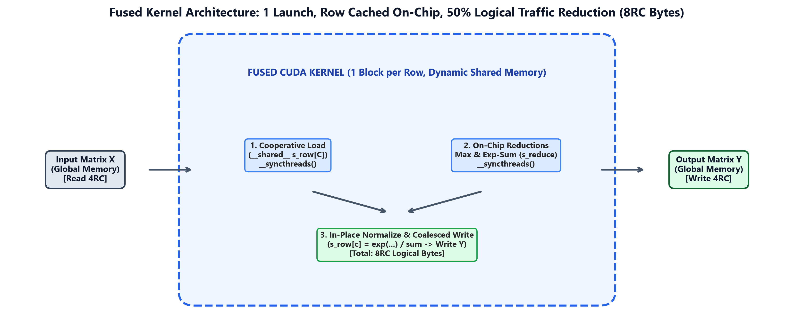
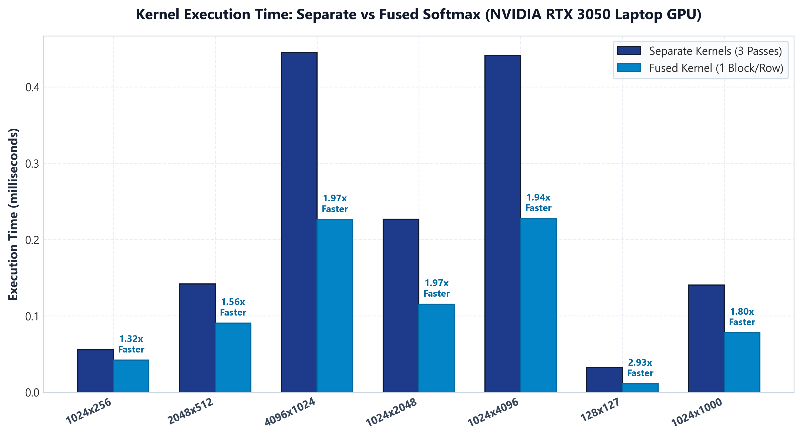
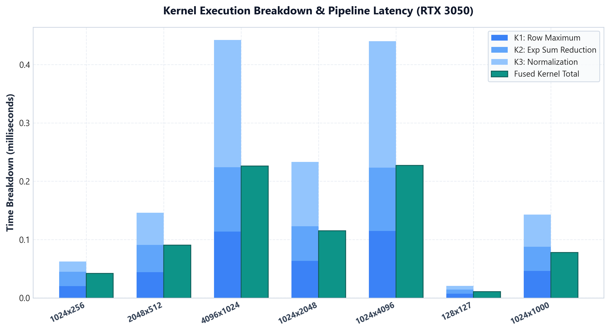
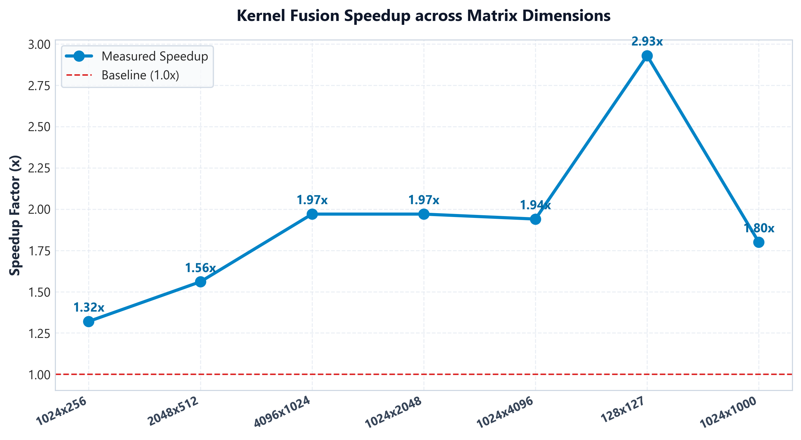
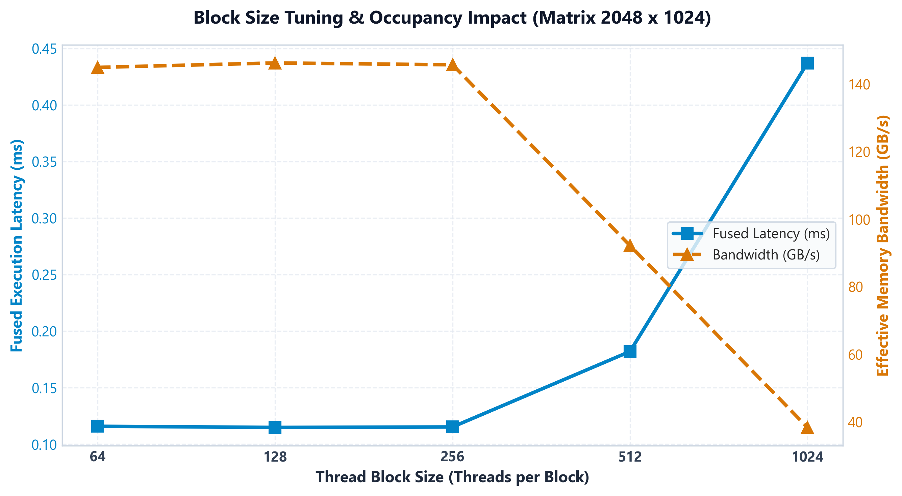
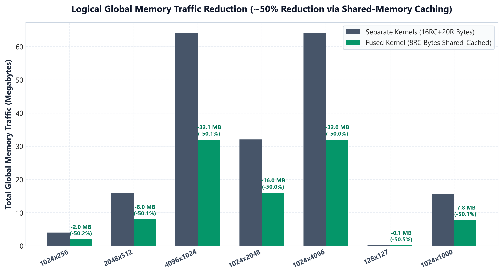

| Host Operating System | Windows 11 (Version 10.0.26300, 64-bit AMD64) |
|---|---|
| Host CPU Processor | Intel64 Family 6 Model 183 Stepping 1 (14 Cores / 20 Threads, 15.78 GB RAM) |
| GPU Accelerator | NVIDIA GeForce RTX 3050 6GB Laptop GPU (Ampere Architecture, sm_86) |
| VRAM & Bandwidth | 6144 MB GDDR6 (96-bit bus, ~192 GB/s theoretical) |
| NVIDIA Driver / CUDA UMD | Driver 621.24 | CUDA Driver Version 13.5 | Toolkit nvcc 13.4.92 |
| Host Compiler | Microsoft Visual C++ (MSVC) 2022 Build Tools (14.44.35207) |
| Mathematical Guarantee | Numerically stable row-wise Softmax: Softmax(x_i) = exp(x_i - max) / sum(exp(x_j - max)) |
| Matrix Configuration | Dimensions | CPU Ref (ms) | Separate Kernels (ms) | Fused Kernel (ms) | Speedup | Memory Saved | Status |
|---|---|---|---|---|---|---|---|
| Mandatory Evaluation Matrix | 4096 x 1024 | 34.43 ms | 0.4448 ms | 0.2261 ms | 1.97x | 33.6 MB (50.1%) | PASS |
| Medium Scale | 2048 x 512 | 8.64 ms | 0.1416 ms | 0.0905 ms | 1.56x | 8.4 MB (50.1%) | PASS |
| Standard Scale | 1024 x 256 | 2.32 ms | 0.0554 ms | 0.0420 ms | 1.32x | 2.1 MB (50.2%) | PASS |
| Non-Power-of-Two (Irregular) | 128 x 127 | 0.13 ms | 0.0319 ms | 0.0109 ms | 2.93x | 0.1 MB (50.5%) | PASS |
Educational Notice: The step-by-step calculator below runs in client-side JavaScript to illustrate the exact intermediate mathematical stages (Max, Shifted, Exponentials, Sum, Normalization) executed by our native CUDA kernels. All benchmark, timing, and bandwidth figures in other tabs represent genuine native CUDA execution on the NVIDIA GeForce RTX 3050 Laptop GPU measured via CUDA Events.
Softmax is memory-bandwidth bound. In the separate implementation, 3 kernels must be launched with 2 intermediate global memory round-trips. In the fused implementation, 1 block is mapped per row, executing tree reductions in fast shared memory and eliminating intermediate global memory traffic entirely.


Estimated Logical Global Memory Traffic Derivation (FP32, 4 Bytes/Element — Algorithm Level vs Physical DRAM)
Note on Traffic Modeling: These values represent estimated logical memory traffic derived from algorithmic reads and writes in global memory. Physical DRAM transactions measured via hardware profilers (such as NVIDIA Nsight Compute) may vary based on L1/L2 cache hit rates and 32-byte memory transaction coalescing.
| Implementation | Memory Access Sequence | Total Bytes Formula | 4096 x 1024 Example |
|---|---|---|---|
| Separate Kernels (3 Passes) | Read X (K1) + Write Max + Read X (K2) + Read Max + Write Sum + Read X (K3) + Read Max + Read Sum + Write Y | 16·R·C + 20·R bytes | 67.19 MB (Estimated Logical) |
| Fused Kernel (Shared-Memory Cached) | Cooperative Load X into shared memory + In-place compute & normalize + Write Y (Zero DRAM max/sum writes) | 8·R·C bytes | 33.55 MB (Estimated Logical) |
| Net Logical Savings | Eliminates 2 kernel launch overheads + 8·R·C + 20·R bytes DRAM traffic | 8·R·C + 20·R bytes | 33.64 MB (50.1% Saved) |





Each benchmark was measured using 10 warmup iterations and 100 timed iterations using high-precision CUDA Events. CPU reference calculated in double precision using std::chrono.
| Config Name | Rows | Cols | CPU Time (ms) | Sep Max (ms) | Sep Sum (ms) | Sep Norm (ms) | Sep Total (ms) | Fused (ms) | Speedup | Traffic Saved | Status |
|---|
| Block Size (Threads) | Matrix Size | Separate Total (ms) | Fused Time (ms) | Speedup | Effective Bandwidth | Max Error vs CPU | Status |
|---|---|---|---|---|---|---|---|
| 64 | 2048 x 1024 | 0.2278 ms | 0.1158 ms | 1.97x | 144.87 GB/s | 1.86e-09 | PASS |
| 128 (Top Speed) | 2048 x 1024 | 0.2277 ms | 0.1148 ms | 1.98x | 146.19 GB/s | 1.86e-09 | PASS |
| 256 (Default) | 2048 x 1024 | 0.2290 ms | 0.1152 ms | 1.99x | 145.64 GB/s | 1.86e-09 | PASS |
| 512 | 2048 x 1024 | 0.2809 ms | 0.1820 ms | 1.54x | 92.17 GB/s | 1.86e-09 | PASS |
| 1024 | 2048 x 1024 | 0.5325 ms | 0.4373 ms | 1.22x | 38.37 GB/s | 1.86e-09 | PASS |